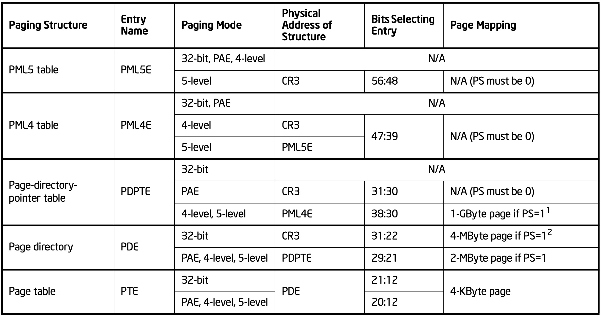
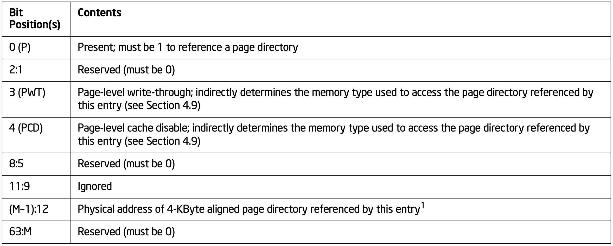
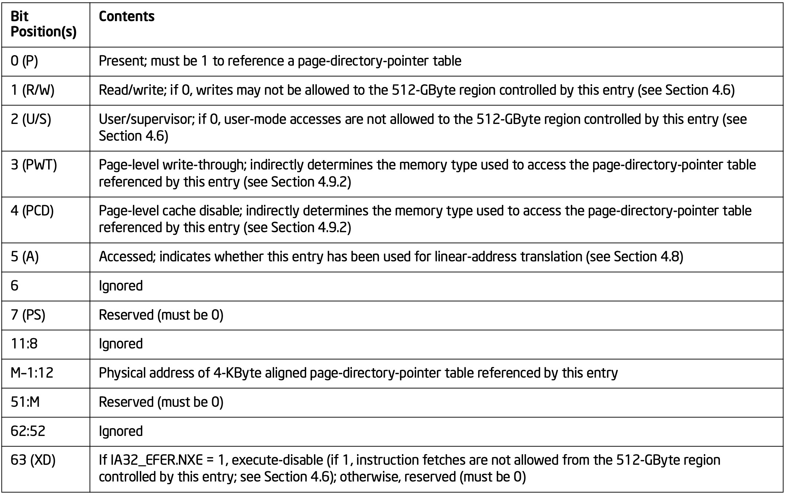
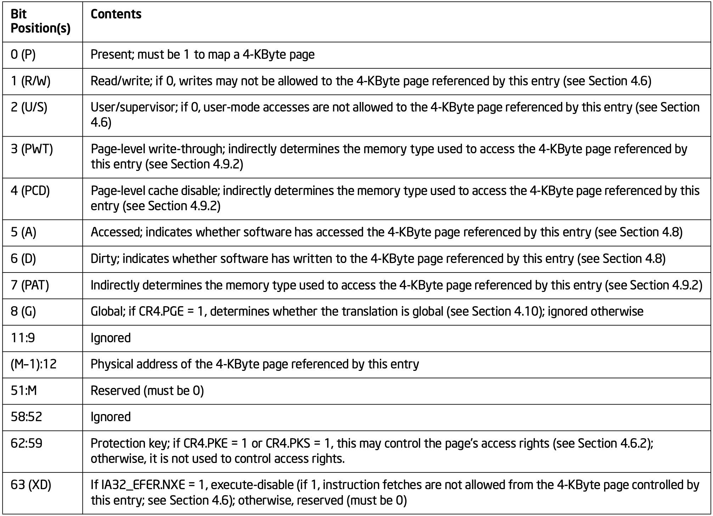

前面的几篇文章分别介绍了x86的系统架构以及x86的保护模式，通过这些介绍相信你对x86已经有了基础的了解，那么本节将对x86的另一机制：分页机制进行学习。
分页模式及控制位(PAGING MODES AND CONTROL BITS)
x86使用下面一系列控制位来控制分页的行为：
- CR0寄存器的WP(bit 16)位和PG位(bit 31)，实际上还有PE位，因为只有在保护模式下才能开启分页
- CR4寄存器的PSE(bit 4)、PAE(bit5)、PGE(bit7)、LA_57(bit12)、PCIDE(bit17)、SMEP(bit20)、SMAP(bit21)、PKE(bit22)、CET(bit23)以及PKS(bit24)
- IA32_EFER MSR的LME和NEX(可以忽略，本文不涉及这两个控制位)
- EFLAGS的AC(bit 18)位，AC位的全称是align-check and access control，所以有两个功能：对其检查和访问控制
软件可以通过MOV CR0的方式将PG设为1来开启分页，但是需要注意的是，在开启之前，软件需要保证CR3寄存器中已经包含了第一个用于线性地址转换的分页结构的物理地址(额…否则分页要如何工作呢?)。
四种分页模式(Four Paging Modes)
如果CR0.PG = 0，那么不使用分页。此时处理器将线性地址当作物理地址直接送到地址总线。CR4.PAE、CR4.LA57、IA32_EFER.LME着三个用来控制分页模式的位都会被处理器忽略。同时CR0.WP、CR4.PSE、CR4.PGE、CR4.SMEP、CR4.SMAP和IA-32_EFER.NXE、CR4.CET也会被忽略(控制字比较多，不过不要担心，后面会一一介绍它们的作用)。
如果CR0.PG = 1，那么将使用分页，此时根据控制字的不同，系统将会选择使用其中一种分页模式。CR4.PAE、CR4.LA57和IA-32_EFER.LME用于控制开启那种分页模式。
| PAE | LME | LA57 | 模式 |
|---|---|---|---|
| 0 | 0 | 0 | 32-bit分页 |
| 1 | 0 | 0 | PAE分页 |
| 1 | 1 | 0 | 4级分页 |
| 1 | 1 | 1 | 5级分页 |
32-bit分页和PAE分页两种模式只能用于传统的保护模式(LME = 0)，而4级分页和5级分页只能用于IA-32e模式下(LME = 1)
以上四种模式的大致区别如下
- 线性地址宽度，不同的模式能够转换的线性地址宽度不同
- 物理地址宽度，不同的模式能够产生的物理地址宽度不同
- 页大小，不同的分页大小能够支持的页的大小不同
- 对禁止执行权限的支持，在某些分页模式下，可以阻止软件从其他可读的页面获取指令
- 对PCIDs的支持，4级分页和5级分页能够支持PCIDs(后面会介绍PCIDs)
- 对MPK(Memory Protection Key)的支持，4级和5级分页能够支持MPK(后面会介绍MPK)
上图简要概括了如何开启四种模式以及四种模式的区别，需要注意的是
- 物理地址的宽度是由MAXPHYADDR来决定的(可以使用CPUID获取)
- 处理器确保党PG = 1、PAE = 0时LME = 0
- 对于32-bit分页模式，只支持4MB大小页的物理地址宽度超过32位，并且只有在支持PSE-36机制的情况下才支持。
- 对于32-bit分页模式，只有CR4.PSE = 1时才支持4MB的小的页
- 禁止执行的访问权限只有在IA32_EFER.NXE = 1时才会被应用
- 支持4级/5级分页的处理器不一定会支持1GB的页
- PCIDs只有在CR4.PCIDE = 1时才会被应用
因为32-bit分页和PAE分页只能在传统保护模式下使用，而传统保护模式只能产生32位的线性地址，因此32-bit分页和PAE分页也只能够翻译32位线性地址。
4级、5级分页只能应用在IA-32e(x86-64)模式，IA-32e模式有两个子模式
- 兼容性模式：在此模式下为了保持兼容，4/5级分页也只使用32位线性地址，此时将63:32之间的bit当作0处理
- 64位模式：4级分页不会使用63-48之间的位、5级分页不会使用63-57之间的位
分页模式切换(Paging-Mode Enabling)
分页模式之间的切换如图所示
分页模式控制位(Paging-Mode Modifiers)
前面说过系统有一些控制位用来控制分页模式的行为，下面将对每个控制位的作用进行简单介绍
CR0.WP
用于组织特权级程序对某些页面的写入。当WP=0时，特权级程序可以对只读线性地址进行写操作，当WP=1时则不允许。具体细节后面会详细介绍(对于用户程序而言，无论WP如何设置，都不允许向只读线性地址发起写操作)
CR4.PSE
控制32bit分页对4MB页的支持。当PSE=0时，32bit分页模式仅支持4KB大小的页；当PSE=1时，32bit分页模式可以同时支持4KB和4MB两种大小的页。对于PAE分页、4级分页和5级分页，无论PSE如何设置，它们都可以支持多种大小的页。后面会详细介绍
CR4.PGE
控制全局页。全局页就是所有进程共享的页。当PGE=0时，禁用全局页；当PGE=1时，开启全局页。在任务切换或者特权级切换时会刷新TLB，而TLB刷新时不会对全局页进行刷新，因此内核可以讲自己的页设置为全局页，这样在任务切换或者特权级切换时就能够避免内核页被刷新出TLB，从而降低开销。此外，内核也可以讲共享库设置为全局页，使各个任务都共享这些页面，这样在任务切换时也不必将这些页面刷新出TLB(更多)。
CR4.PCIDE
控制进程上下文标识(PCID: Process Context Identifiers)，该标志仅对4级/5级分页有用。主要目的也是为了尽可能的减少TLB的刷新，如果不使用PCID，那么在发生任务切换时，会将整个TLB进行刷新(除了全局页)，使用PCID之后，每个任务都有一个唯一的PCID，这样不同任务的TLB记录就可以共存(细节)。
CR4.SMEP(supervisor-mode-execution-protect)
控制特权级程序对用户指令的执行。当SMEP = 1时，特权级程序不能执行用户程序的指令。
CR4.SMAP(supervisor-mode-access-protect)
控制特权级程序对用户数据的访问。当SMAP = 1时，特权级程序不能访问用户程序的数据，和SMEP类似，具体细节后面介绍分页权限控制时介绍。开启这两个控制位能够很大程度的防止ret2usr内核攻击。
CR4.PKE与CR4.PKS
控制MPK的使用。当置位时，启用基于保护密钥的访问权限。4级分页和5级分页将每个线性地址与一个保护密钥联系起来。当CR4.PKE=1时，PKRU寄存器会保存一组protection key，每个用户空间的线性地址都会附带一个protection key，通过线性地址中携带的key去PKRU寄存器中查询，从而判断当前线性地址是否可读/写。当CR4.PKS=1时，IA32_PKRS MSR对监督者模式的线性地址也是如此，更多细节后续介绍。
CR4.CET
控制流技术相关，可以忽略
IA32_EFER.NXE
启用PAE分页、4级分页和5级分页的执行禁止权限。如果IA32_EFER.NXE = 1，可以防止从指定的线性地址获取指令(即使允许从地址读取数据)。后面会进一步介绍。需要注意的是，IA32_EFER.NXE对32位分页没有影响，想使用这个功能来限制从可读页获取指令必须使用PAE分页、4级分页或5级分页。
层次化的分页结构概述(HIERARCHICAL PAGING STRUCTURES: AN OVERVIEW)
前面说到的4中层次化分页结构都采用层次化分页结构。本节将会对四种分页结构的细节进行进一步介绍。每个分页结构大小为4KB并包含若干个独立的项(类似数组)。
- 32-bit分页模式下，每个项占4Bytes，因此一个分页结构最多包含1024个这样的项。
- PAE、4/5级分页模式下，每个项占8Bytes，因此每个分页结构最多包含512个这样的项。
处理器使用线性地址的高位部分并结合分页结构最终定位到一个页框(实际的物理页)，然后使用线性地址的低位部分作为物理页框的内部偏移定位到实际要访问的物理地址。
每个分页结构项都包含一个物理地址，该物理地址可以用来定位另外一个分页结构(称为引用其他分页结构)或者一个物理页框(称为映射一个页)。第一个分页结构的物理地址位于CR3寄存器中。一个线性地址可以由一个递归程序进行翻译，最终得到物理地址(忽略权限、页不存在等情况)：
- 线性地址的一部分(通常是高位)用来在分页结构中选择一个分页结构项(最初的分页结构由CR3定位)。
- 如果该项引用了其他分页结构，那么继续重复1
- 如果该项映射了一个页，那么处理结束，最终使用线性地址剩余的部分(通常是低位)在物理页中确定偏移值。
如下给出了4中模式的示例(下面的示例都采用4KB的页)
32bit分页
每个分页结构包含1024个项。因此，翻译过程使用线性地址的10个bit来确定一个分页结构项。Bit[31-22] + CR3寄存器中的第一个分页结构物理地址用来确定第一个分页结构、Bit[21-12] + 第一个分页结构项用来确定第二个分页结构项、第二个分页结构项确定一个4KB的物理页；经过前面的过程，通过线性地址的[31-12]位成功确定了一个4KB的物理页，目前线性地址还剩下[11-0]，着12位作为物理页的偏移最终确定一个物理地址。
PAE分页
第一个分页结构只包含4个项，翻译过程中会使用线性地址的2个bit来确定后面的分页结构项，即Bit[31-30]；剩下的分页结构包含512个项，因此每次翻译会使用线性地址的9个bit，翻译两次后会确定一个4KB的物理页，此时线性地址剩下12位，用于确定在物理页内部的偏移。
4级分页
每个分页结构包含512个项，因此每次翻译需要使用线性地址的9个位，经过4次翻译后确定一个4KB的物理页，最终用线性地址的剩下12位确定页内偏移。因此4级分页可以翻译48位线性地址。
5级分页
和4级分页类似，只是多了一级，也就是说5级分页能够翻译57位的线性地址。
上面的翻译过程最中都会得到一个物理页地址，然后使用线性地址的低12位确定最终的页内偏移。然而，有些线性地址在翻译过程中会因为分页结构不符合条件而终止，最终并不会得到一个物理页地址，例如在翻译时遇到一个分页结构被标记为不存在或者该分页结构的某些保留位被设置，此时翻译过程会中途停止并最终产生一个页错误异常(page-fault)。
通过上面的翻译过程我们发现，使用线性地址进行翻译时，有时会得到另外一个分页结构，有时会得到一个物理页，那么什么时候会得到一个分页结构，什么时候会得到一个物理页呢？
- 如果线性地址剩余没用的位数大于12位，判断当前分页结构的PS(bit 7 page-size)位；如果PS = 0，那么当前分页结构引用的是另外一个分页结构，如果PS = 1，那么当前分页结构引用的是一个物理页(大于4KB的页：2MB/4MB/1GB)
- 如果线性地址剩余没用的位数只有12位，那么当前分页结构项引用的一定是一个4KB的物理页
如果当前分页结构引用的是一个物理页但是在线性地址有超过12位没有使用，那么说明当前分页结构引用的是一个比4KB更大的页。例如：32bit分页使用线性地址的高10位确定第一个分页结构项，此时线性地址还剩下22位没有用，如果该分页结构项引用的是一个物理页，那么该物理页大小为2的22次方也就是4MB。只有当CR4.PSE = 1时32bit分页才能使用4MB页，其他的分页模式都可以使用2MB的页无论PSE如何设置；另外4/5级分页甚至可以使用1GB的页如果处理器支持。
根据不同分页结构在翻译过程中的顺序，下图为不同的分页结构起了不同的名字：

需要注意两点
- 并非所有的处理器都支持1GB分页，需要使用CPUID指令确认当前处理器是否支持(由于CPUID和本节关系不大，所以没有介绍)
- 对于32-bit分页，只有PDE的PS位置1并且CR4.PSE = 1，才能支持4MB页，并且不是所有的处理器都支持(同样的，可以通过CPUID查看)
32-bit分页(32-BIT PAGING)
当CR0.PG = 1并且CR4.PAE = 0时，处理器使用32位分页，32位分页能够翻译32位线性地址，最多产生40位物理地址(在32位分页使用的任何物理地址中，39:32范围内的位是0，除了那些用于映射4-MByte页的物理地址。如果处理器不支持PSE-36机制，用于映射4MByte页面的物理地址也是如此。如果处理器支持PSE-36机制，并且MAXPHYADDR<40，那么在任何用于映射4-MByte页面的物理地址中，39:MAXPHYADDR范围内的位为0，至于如何确定处理器是否支持PSE-36以及MAXPHYADDR的值，可以使用CPUID指令查询处理器参数获取)。尽管40位物理地址对应1TB的地址空间，但是由于线性地址被限制在32位，因此在任一时刻进程最多只能使用4GB的线性地址空间。
32位分页使用层次分页结构对一个线性地址进行翻译，最终产生物理地址。使用CR3确定第一个分页结构的物理地址，如图展示了CR3如何确定第一个分页结构：
可以看到CR3的[31:12]位用于确定第一个分页结构的物理地址(由于分页地址是4KB对齐的，因此物理地址[11-0]两位一定是0)
32位分页将一个线性地址最终映射成一个4KB或者4MB大小的页。对两中页的映射图如下所示：
4KB页
4MB页
线性地址翻译过程
下面将详细介绍32位分页翻译线性地址的过程：
- CR3寄存器的[31-12]用于确定一个4KB对齐的分页结构(PDE-页目录)，一个页目录结构包含1024个页目录项，使用线性地址和页目录确认一个页目录项的物理地址过程如下
- 39-32之间的bit都为0
- 31-12之间的bit从CR3中获取
- 11-2之间的bit从线性地址的31-22种获取
- 1-0之间的bit默认为0，因为页目录是4KB对齐，而每个页目录项大小4Byte，因此决定了页目录项是双字对齐的，即1-0bit都为0
- 在上一步中通过CR3和线性地址中的高10位，得到了一个页目录项(PDE)，此时线性地址还剩下22bit位没有使用。此时PDE既可以映射一个4MB的页，也可以引用下一个分页结构；具体引用哪种取决于CR4.PSE和PDE中的PS位
- 如果CR4.PSE = 1，并且PDE中的PS = 1，那么此时该PDE映射一个4MB的页，并且最终能够产生一个40bit的物理地址(当然要取决于处理器是否支持PSE-36以及MAXPHYADDR)，产生40bit物理地址的具体过程如下：
- 39-32之间的bit取自于PDE的20-13bit
- 31-22之间的bit取自于PDE的31-22bit
- 21-0之间的bit取自于线性地址的21-0bit
- 如果CR4.PSE = 0或PDE.PS = 0，那么此时该PDE引用下一个分页结构；和PDE类似，下一个分页结构被称为页表，同样也是4KB对齐的页，包含1024个项，每个项被称为页表项。使用线性地址和页目录项确认一个页表项的物理地址过程如下
- 39-32之间的bit都为0
- 31-12之间的bit取自于PDE项
- 12-2之间的bit取自于线性地址的21-12bit
- 1-0之间的bit都为0
- 如果CR4.PSE = 1，并且PDE中的PS = 1，那么此时该PDE映射一个4MB的页，并且最终能够产生一个40bit的物理地址(当然要取决于处理器是否支持PSE-36以及MAXPHYADDR)，产生40bit物理地址的具体过程如下：
- 到目前为止，我们得到了一个PTE项(假设PDE引用的是4KB页)，此时线性地址还剩下12个bit位没有使用。此时PTE项映射一个4KB的物理页，将线性地址剩下的12bit作为偏移外加物理页的基地址可以最终确认要访问的物理地址，确认物理地址过程如下
- 39-32之间的bit都为0
- 31-12之间的bit取自于PTE
- 11-0之间的bit取自于线性地址的11-0
经过上述的步骤，最终成功将一个32位的线性地址转换成了一个40位的物理地址。但是需要注意的是，上述过程忽略了权限校验、存在检查等步骤。如果在翻译的过程中要用到的PDE或者PTE任意一个项的P = 0或者项的某些保留位被设置，或者在任一项上的权限校验失败，翻译将不会成功，并且最终会产生一个页错误异常(page-fault)。
保留位
对于32位分页，仅当CR4.PSE = 1时有以下保留位
- 如果P标志置1并且PSE置1，保留位取决于MAXPHYADDR，以及处理器是否支持PSE-36机制
- 如果不支持PSE-36机制，那么PDE项的21-13bit保留(因为21-13用于填充物理地址的39-32位，不支持PSE-36就不支持40位物理地址，所以这些位需要保留)
- 如果支持PSE-36机制，那么21-(M-19)之间保留，M = min(MAXPHYADDR, 40)，可以看到当M = 40时，只有21位保留
- 如果处理器不支持PAT
- 如果PTE的P置1，那么PTE的位7保留(PTE的位7是PAT位，PDE的位7是P位)
- 如果PDE的P = 1并且CR4.PSE = 1，此时PDE映射一个4MB的页，此时PDE的位12保留(PAT位)
32位分页下各项结构
各分页结构图
32位分页下，CR3、PDE、PTE结构如下图所示
注意，上图中对于映射4MB的PDE结构，假设MAXPHYADDR是36，因此保留位是[21:36-19]
PDE项-4MB页
对于一个映射4MB页的PDE，它的结构详情如下图
图中M取决于CR4.PSE标志以及处理器是否支持PSE-36和MAXPHYADDR
PDE-PTE
对于一个应用PTE表的PDE，它的结构详情如下
PTE
对于一个映射4KB页的PTE项，它的结构详情如下
PAE 分页(PAE Paging)
当CR0.PG = 1、CR4.PAE = 1并且IA-32_EFER.LME = 0时，处理器使用PAE分页。PAE分页能够将32位线性地址转换成52位物理地址(和前面一样，具体翻译成多少位物理地址要取决于MAXPHYADDR)。尽管52位物理地址可以支持1PB的物理地址空间，但是由于线性地址限制在32位，因此任务在任意时刻最多能够访问的线性地址空间为4GB。
在PAE分页模式下，一个处理器(核)包含一组4个PDPTE寄存器，这4个寄存器中的值从CR3寄存器指定的地址中加载。线性地址的翻译使用4个层次化分页结构，每个分页结构通过一个PDPTE寄存器确定位置。
PDPTE寄存器
在PAE分页模式下，CR3寄存器指向一个32Byte大小的page-directory-pointer-table(页目录指针表)，该表有4个项，每个项8个Byte，指向一个页目录结构，每个页目录结构负责1GB的线性地址空间。当开启PAE分页或者改变CR3时(如任务切换)会将这4个项分别加载到4个PDPTE寄存器中。
CR3寄存器内容
此时CR3寄存器内容如图所示
PDPTE寄存器
PDPTE寄存器内容如图所示，如果任何一个PDPTE寄存器同时设置P = 0和任意保留位，那么MOV to CR指令加载CR3寄存器时会产生一个通用保护异常，并且此时PDPTE寄存器也不会被加载。

图中M取值为min(52, MAXPHYADDR)
线性地址翻译过程
PAE分页下，会将线性地址转换成4KB页或者2MB页，对两个页的映射过程如下图所示：
4KB页
2MB页
下面将介绍PAE分页模式翻译线性地址的更多细节：
- 首先使用线性地址的[31-30]bit位选择一个PDPTE寄存器(假设选中的寄存器位PDPTEi)，如果选中的PDPTEi寄存器的存在位P = 0，那么翻译结束，此时产生一个页错误异常
- 如果P = 1，那么通过确定的PDPTEi寄存器的[51:12]位可以找到4KB对齐的分页结构，该分页结构就是页目录结构，由于PAE分页下每个页目录项大小扩展到了8字节，因此此时一个页目录只包含512个页目录项，一个PDE项的物理地址翻译过程如下
- Bit51-12取自于PDPTEi寄存器
- Bit11-3取自于线性地址的29-21Bit
- Bit2-0都为0
- 到目前为止通过线性地址的31-21一共11个bit位，我们确认了一个PDE项，此时线性地址还剩下20-0一共21位未使用。PDE项可以映射一个2MB的页，也可以引用下一个页目录结构项(PTE)
- 如果PDE.PS = 1，那么此时该PDE项映射一个2MB的页，此时我们直接可以得到最终的物理地址，翻译过程如下
- Bit51-21取自于PDE项
- Bit20-0取自于线性地址的20-0Bit
- 如果PDE.PS = 0，那么此时该PDE引用下一个分页结构(PTE)，此时一个PTE项的物理地址翻译过程如下所示
- Bit51-12取自PDE项
- Bit11-3取自于线性地址的20-12Bit
- Bit2-0都为0
- 如果PDE.PS = 1，那么此时该PDE项映射一个2MB的页，此时我们直接可以得到最终的物理地址，翻译过程如下
- 假设PDE引用的是一个分页结构，那么到目前为止我们得到了一个PTE项，此时线性地址还剩下11-0一共12位未使用。由于PTE映射了一个4KB的页，所以此时我们可以得到最终的物理地址
- Bit51-12取自于PTE项
- Bit11-0取自于线性地址的11-0Bit
如果在翻译的过程中，使用到的PDE/PTE任意一个P位位0或者保留位被使用，那么翻译将不会进行下去，此时处理器会产生一个页错误异常。
保留位
PAE分页模式下各个分页结构项的保留位如下
- 如果PDE和PTE的P标志为1，那么62:MAXPHYADDR保留
- 如果PDE的P和PS都为1，此时PDE指向2MB页，此时PDE址址需要提供52-21外加线性地址的20-0就能够确定实际的物理地址，此时不需要20-12位来确定地址，此时12位需要用来表明PAT，因此20:13位保留不用
- 如果IA-32_EFER.NXE = 0并且PDE或PTE的P = 1，那么此时XD(bit 63)保留不用
- 如果处理器不支持PAT
- 如果PTE标志位P = 1，那么此时PTE中的PAT位(bit7)保留不用
- 如果PDE标志位P = 1，那么此时PDE中的PAT位(bit12)保留不用
PAE分页下各项结构
PAE分页下，CR3、PDPTEs、PDE、PTE各项结构概要如图所示：
图中需要注意以下几点
- M是MAXPHYADDR
- CR3在64位架构下有64bit，但是在PAE分页中只使用低32位
- 保留位必须为0
- 如果IA-32_EFFER.NXE = 0并且PDE/PTE标志P = 1，那么XD位保留
PDE-2MB页
对于一个映射2MB页的PDE项，其结构如下所示
PDE-PTE
对于一个引用PTE表的PDE项，其结构如下所示

PTE
对于一个映射4KB页的PTE项，其结构如下所示
4级分页与5级分页(4-LEVEL PAGING AND 5-LEVEL PAGING)
4级分页与5级分页的过程比较相似，因此放在同一章节介绍。当CR0.PG = 1、CR4.PAE = 1、IA-32_EFER.LME = 1处理器使用4级或5级分页
- CR4.LA57 = 0， 此时使用4级分页，将48位线性地址转换为52位物理地址
- CR4.LA57 = 1， 此时使用5级分页，将57位线性地址转换为52位物理地址
两种分页模式都采用层次化分页结构并且通过CR3确定第一个分页结构的物理地址(4级分页的第一个分页结构是PML4，5级分页的第一个分页结构是PML5)。CR3寄存器中内容与CR4.PCIDE值有关
- CR4.PCIDE = 0时CR3寄存器内容如下：
- CR4.PCIDE = 1时CR3寄存器内容如下：
软件修改CR4.PCIDE值之后，处理器会立刻修改CR3。例如，如果软件将CR4.PCIDE从1改为0，当前的PCID立即从CR3[11:0]变为000H。并且处理器随后使用CR3.PWT和CR3.PCD确定用于访问PML4表的内存类型，这两个位置曾是PCID的第4:3位。
4/5级分页分别可以映射4KB、2MB以及1GB大小的页(并非所有处理器都支持1GB大小的页)。以4级分页为例，映射不同页时过程如下图所示：
4KB页
2MB页
1GB页
4级分页与5级分页模式下，每个线性地址都附带一个protection key，后文会介绍该key的作用。
翻译过程
- 对于5级分页，CR3中包含一个4KB对齐的分页结构，我们称该结构为PML5，该结构中包含512个8Byte大小的项，我们称之为PML5E。一个PML5E物理地址的生成过程如下
- Bit51-12取自于CR3
- Bit11-3取自于线性地址56-48
- Bit2-0都为0
- 通过步骤1，我们确定了一个PML5E，此时线性地址还剩48位，通过PML5E可以确定下一个分页结构项，下一个分页结构我们称之为PML4(该结构同时也是4级分页的第一级分页结构)，一个PML4E的物理地址生成过程如下
- Bit51-12取自于CR3(对于4级分页)或者取自于PML5E(对于5级分页)
- Bit11-3取自于线性地址47-39
- Bit2-0都为0
- 通过步骤2，我们确定了一个PML4E，此时线性地址还剩39位，通过PML4E可以确定下一个分页结构，下一个分页结构我们称之为PDPTE(page directory pointer table)，一个PDPTE的物理地址生成过程如下
- Bit51-12取自于PML4E
- Bit11-3取自于线性地址38-30
- Bit2-0都为0
- 到目前为止，我们确定了一个PDPTE，此时线性地址还剩30位；该PDPTE可以引用下一个分页结构PDE，也可以直接引用一个1GB的页，这取决于该PDPTE的PS位
- PS = 1，此时PDPTE直接映射一个1GB的物理页，最终物理地址生成过程如下
- Bit51-30取自于PDPTE
- Bit29-0取自于线性地址30-0
- 此时线性地址的protection key取自于PDPTE的62-59
- PS = 0， 此时PDPTE引用下一个分页结构，该结构就是我们熟悉的PDE，一个PDE的物理地址生成过程如下
- Bit51-12取自于PDPTE
- Bit11-3取自于线性地址29-21
- Bit2-0都为0
- PS = 1，此时PDPTE直接映射一个1GB的物理页，最终物理地址生成过程如下
- 假设PDPTE引用的是一个分页结构，那么此时我们得到了一个PDE，此时线性地址还剩21位。和PDPTE类似，一个PDE可以直接映射一个2MB的页，也可以引用下一个分页结构-PTE，这取决于该PDE的PS标志
- PS = 1，此时PDE直接映射一个2MB的物理页，最终物理地址生成过程如下
- Bit52-21取自于PDE
- Bit20-0取自于线性地址
- 此时线性地址的protection key取自于PDE62-59
- PS = 0，此时PDE引用下一个分页结构-PTE，一个PTE的物理地址生成过程如下
- Bit52-12取自于PDE
- Bit11-3取自于线性地址20-12
- Bit2-0都为0
- PS = 1，此时PDE直接映射一个2MB的物理页，最终物理地址生成过程如下
- 假设PDE引用的是一个分页结构，那么此时我们得到了一个PTE，此时线性地址还剩12位，PTE最终直接映射一个4KB的页，因此最终物理地址生成过程如下
- Bit51-12取自于PTE
- Bit11-0取自于线性地址11-0
- 此时线性地址的protection key取自于PTE的62-59
和上面32位分页于PAE分页相同，如果在翻译过程中用到的分页结构项有任意一项P=0或者设置了保留位，那么翻译就会终止，并且处理器会报页错误异常。
保留位
4级分页与5级分页结构中保留位如下(下面假设每个结构的P标志为1)，需要注意的是在所有4级分页中都支持PAT
- 每个分页结构中Bit51-MAXPHYADDR之间的位保留不用
- PML5E、PML4E中的PS标志保留不用
- 如果处理器不支持1GB大小的页，那么PDPTE中的PS标志同样保留不用
- 如果PDPTE中PS标志置1，那么此时PDPTE直接映射1GB的页，此时PDPTE的29-12就不再参与地址翻译，由于12用于PAT，因此29-13保留不用
- 如果PDE中PS标志置1，那么此时PDE直接映射2MB的页，此时PDE的21-12就不再参与地址翻译，由于12用于PAT，因此21-13保留不用
- 如果IA-32_EFFR.NXE = 0，那么每个分页结构的XD(bit63)保留不用
4/5级分页下各项结构
4/5级分页下各项结构如下图所示
PML5E
PML5E是5级分页的第一个分页结构项名称，结构如下
PML4E
PML4E是5级分页的第二个分页结构名称，同样也是4级分页的第一个分页结构名称，结构如下

PDPTE-1GB
PDPTE是5级分页第三个分页结构名称(4级分页第2个)，对于一个直接映射1GB页的PDPTE来说，结构如下
PDPTE-PDE
对于一个引用PDE的PDPTE来说，结构如下
PDE-2MB
PDE是5级分页第四个分页结构名称(4级分页第3个)，对于一个直接映射2MB页的PDE来说，结构如下
PTE
PTE是4/5级分页的最后一个分页结构名称，直接映射一个4KB页，结构如下

访问权限
前面介绍了4中分页模式的页结构以及它们是如何将线性地址最终转换成物理地址，在上面介绍的所有转换过程中，为了简单起见，都省略在地址转换中非常重要的步骤，同时也是分页的重要功能之一：访问权限校验。一个线性地址最终能否被翻译成物理地址并访问，取决于每个分页结构项(除了PAE分页模式中的PDPTE项)、CR0、CR4、IA-32_EFFER、EFLAGS.AC以及访问模式。
访问权限的确定(访问权限的确定)
每个对线性地址的访问，要么是来自特权级访问，要么是来自用户级访问。对所有指令的获取和大多数数据的访问，由当前程序的CPL确定访问类型：CPL < 3室特权级访问，CPL = 3是用户级访问。
有些操作通过线性地址隐式访了系统数据结构。对这些数据结构的访问是特权及程序的访问，与CPL无关。例如：访问GDT/LDT从而加载一个段描述符、当收到异常或者中断时访问IDT、在任务切换或CPL切换(特权级切换)时访问TSS段等。这些都被称为CPL无关的隐式特权级访问。除此之外另外一些则被称为显示特权级访问。
分页结构项中的U/S字段同样指定了页的类型，从而起到控制访问权限的作用。如果在线性地址转换的过程中用到的分页结构有任意一个U/S标志位0，则表明该线性地址是一个特权级线性地址；如果所有项的U/S都为1，则表明该线性地址是用户级线性地址。
详细过程
特权级访问(CPL < 3)
访问特权级数据
无论是隐式还是显式访问，只要线性地址指向的分页结构中的protection key允许访问，那么特权级用户可以访问任务特权级数据
访问用户级数据
此时取决于CR4.SMAP标志
- SMAP = 0， 同样的，只要分页结构中protection key允许，可以访问任何用户级数据
- SMAP = 1，此时访问是否允许则取决于EFLAGS.AC标志和访问方式是隐式还是显式
- 如果EFLAGS.AC = 1并且是显式访问，那么只要分页结构中的protection key允许，可以访问任何用户级数据
- 如果EFLAGS.AC = 0或者是隐式访问，那么不允许读取任何用户级数据(为了保护内核安全)
向特权级地址写入数据
此时写入权限取决于CR0.WP标志
- 如果WP = 0，只要分页结构中protection key允许，可以向任意特权级地址写入数据
- 如果WP = 1，并且分页结构中的R/W = 1和protection key允许，则可以写如特权级地址数据；否则不允许。
向用户级地址写入数据
此时写入权限取决于CR0.WP标志
- 如果WP = 0， 访问权限取决于CR4.SMAP
- 如果SMAP = 0，那么只要分页结构中protection key允许，则可以写入任意用户级地址
- 如果SMAP = 1，访问权限取决于EFLAGS.AC标志和访问方式是隐式还是显式
- 如果EFLAGS.AC = 1并且是显式访问，那么只要分页结构中的protection key允许，则可以写入
- 如果EFLAGS.AC = 0或者是隐式访问，那么不允许写入
- 如果WP = 1， 访问权限取决于SMAP
- 如果SMAP = 0，那么只要分页结构中的R/W = 1并且protection key允许，则可以写入，否则不允许
- 如果SMAP =1 ，那么取决于EFLAGS.AC和访问方式
- 如果AC = 1并且是显式访问，并且分页结构中R/W = 1且protection key允许，则允许写入，否则不允许
- 如果AC = 0或者是隐式访问，则不允许写入
从特权级地址获取指令
- 32位分页下或者IA-32_EFFR.NXE = 0，可以从任意特权级地址获取指令
- 在其他分页模式下并且IA-32_EFFR.NXE = 1，只要翻译过程中用到的每个分页结构中XD标志为0，则可以获取任意特权级地址处的指令，否则不允许
从用户级地址获取指令
此时权限取决于CR4.SMEP标志
- 如果SMEP = 0，则访问权限取决于IA-32_EFFR.NXE标志
- 如果是32位分页或NXE = 0，则可以获取任意用户级地址指令
- 如果是其他分页模式并且NXE = 1，则取决于XD，和上面类似
- 如果SMEP = 1，则不允许获取用户级地址的指令
用户级访问(CPL=3)
相对于特权级访问，用户级访问相对简单一些
读取数据
- 只要分页结构的protection key允许，那么可以访问任意用户级数据
- 不允许访问任何特权级数据
写数据
- 只要翻译过程中的所有分页结构R/W标志都为1并且最后分页结构的protection key允许，则可以写入；否则不允许
- 不允许写入任何特权级数据
获取指令
- 32位分页模式或者NXE = 0，则可以获取任意用户级指令
- 其他分页模式并且NXE = 1，则取决于XD：如果翻译过程中用到的分页结构XD都为0，则允许，反之不允许
- 不允许获取任何特权级地址的指令
另外，处理器可能会将分页结构中的数据缓存在TLB中或者分页结构缓存中，这样后续处理器在翻译线性地址时可以通过访问TLB以及缓存来加快翻译速度，这也就意味着，即使修改了分页结构中的访问权限，但是由于TLB和缓存没有更新(失效)，因此处理器又可能仍然用旧的权限。
内存保护键(Protection Key)
4/5级分页模式下，每个直接映射到物理页框的分页结构的[62-59]bit位存储了该页面的protection key，该key控制着当前物理页框的访问权限。另外，protection key的应用和关闭取决于一下两个标志位
- CR4.PKE = 1时，PKRU中存储相应的权限，决定了一个来自用户级线性地址最终能够被访问或被修改
- CR4.PKS = 1时，IA32_PKRS MSR中存储相应的权限，决定了一个来自特权级地址最终能够被访问或修改
32位分页和PAE分页没有protection key功能，因此在此分页模式下访问线性地址时默认protection key为可读可修改。
PKRU寄存器是一个32位寄存器，主要存储如下格式内容：我们假设i从0到15，那么
- PKRU[2i]存储着访问禁止保护键(ADi:access disabled)
- PkRU[2i + 1]存储着写禁止保护键(WDi: write disabled)
IA32_PKRS同理。
详细过程
保护键只负责控制对数据读写的保护权限，对于指令的获取不涉及保护键， 保护键控制访问权限过程如下：
用户级数据
- 如果PKE = 0，那么在4/5级分页下访问/修改用户级别数据时默认保护键允许读/写
- 如果PKE = 1，对于一个用户级线性地址的保护键i，具体是否可以读/写取决于PKRU寄存器中的值
- 如果ADi = 1，不允许任何数据访问(无论用户级还是特权级访问)
- 如果WDi = 1，此时需要区分是用户级写还是特权级写
- 如果是用户级写，则不允许写操作
- 如果是特权级写，则取决于CR0.WP，如果WP = 1，则不允许写；反之可写
特权级数据
需要注意，此处访问/修改特权级数据的操作肯定是由特权级程序发起的，用户级程序无论如何无法访问和修改特权级数据
- 如果PKS = 0，那么4/5级分页下访问/修改特权级数据时默认保护键允许读/写
- 如果PKS = 1，那么取决于WP，如果WP = 1，则不允许写，反之可写
页错误异常(PAGE-FAULT EXCEPTIONS)
对于一个线性地址的访问可能会导致一个页错误异常(page-fault expection 14)，产生页错误异常的原因可能有两个：
- 要访问的页不再内存中，也就是翻译过程中使用到的某个分页结构P标志为0
- 要访问的页在内存中，但是权限校验失败
当启用英特尔软件防护扩展（Intel® SGX）时，处理器可能会因为与分页无关的原因而提供异常14。这样的异常被称为SGX引起的页面故障。处理器使用错误代码来区分SGX引起的页面故障和普通的页面故障。
页错误码如下图所示
P标志
表明在翻译过程中使用的某个分页结构的P标志为0，即也不在内存中
W/R标志
如果导致页面故障异常的访问是写，则该标志是1；否则为0。 这个标志描述了导致页面故障异常的访问，而不是分页指定的访问权限。
U/S标志
如果是用户级访问导致了页面故障异常，则该标志为1；如果是特权级访问导致了页面故障异常，这个标志是0。这个标志描述了导致页面故障异常的访问，而不是由分页指定的访问权。
RSVD标志
如果翻译过程中用到的某个分页结构项的保留位被设置，则该标志为1(需要注意的是：当分页结构项的P标志为0时，不会检查项的保留位，因此只有当分页结构项的P标志为1时，才可能会产生该错误码)。分页结构项中保留的位是为将来的功能保留的。软件开发者应该意识到这些位在将来可能会被使用。
PK标志
违反了保护键时被设置
SS标志
影子堆栈的访问导致的页面错误(忽略)
SGX标志
如果异常与分页无关，并且是由于违反SGX特定的访问控制要求造成的，那么这个标志就是1。因为只有在没有普通的分页故障的情况下才会发生这样的违反，这个标志只有在P标志为1，RSVD标志和PK标都为0时才会被设置。
页错误异常只发生在试图使用线性地址的情况下产生。在PAE分页下加载PDPTE寄存器的失败会导致一般保护异常(#GP(0))，而不是分页错误异常。
访问位与脏位
每个分页结构的Bit5位都是访问位(Accessed)，对于那些映射物理页的分页结构，它们的Bit6位为修改位(Dirty)。这两个字段为内存管理程序在将页面换入唤出时提供的方便。
当处理器在翻译线性地址时，对于使用到的分页结构，如果其访问位没有被设置，那么处理器会自动设置该位。类似的，当处理器在翻译一个写线性地址时，处理器会将映射物理页的分页结构的修改位置1(如果没有被修改过)。
当一个物理页面或分页结构最初被加载到物理内存时，内存管理软件可能会清除这些标志。这些标志是 “粘性 “的，意味着一旦设置，处理器不会清除它们；只有软件可以清除它们。处理器可以在TLB和分页结构缓存中缓存分页结构条目的信息。这个意味着，如果软件将一个被访问的标志或一个脏的标志从1改为0，处理器可能不会在使用受影响的线性地址的后续访问中设置内存中的相应位。
缓存线性地址转换信息(CACHING TRANSLATION INFORMATION)
Intel-64和IA-32架构可以通过缓存处理器上分页结构的数据来加速地址转换过程，由于处理器不能确保它所缓存的数据与内存中的结构总是一致的，所以上层的软件开发者必须了解处理器如何以及何时可能缓存这些数据、还应该了解软件可以采取什么行动来删除可能不一致的缓存数据，以及何时应该这样做。
进程上下文标识符PCIDs(Process-Context Identifiers)
进程上下文标识符(PCIDs)是一种标志，逻辑处理器可以通过它来缓存多个线性地址空间的信息。当切换到具有不同PCID的不同线性地址空间时，处理器可以保留前面缓存的信息。
一个PCID是一个12位的标识符。非零的PCID通过设置CR4.PCIDE标志(位17)来启用。
- 如果CR4.PCIDE=0，当前的PCID总是000H
- 否则当前的PCID是CR3[11-0]位
并非所有的处理器都允许CR4.PCIDE被设置为1。
处理器确保只有在IA-32e模式下才能设置CR4.PCIDE为1(32位分页下和PAE分页下只使用PCID 000H)。并且只有当CR3[11:0]=000H时，软件才能将CR4.PCIDE从0改为1。这些要求是由MOV CR指令的以下限制来执行的：
- 如果MOV到CR4会使CR4.PCIDE从0变为1，并且IA32_EFER.LMA=0或CR3[11:0]≠000H，则会引起一般保护异常(#GP)。
- 如果MOV到CR0会将CR0.PG清除为0，而CR4.PCIDE=1，则会引起一般保护异常。
当逻辑处理器在TLB和分页结构缓存中创建条目时，它将这些条目与当前PCID相关联。当使用TLB和分页结构缓存中的条目来转换线性地址时，逻辑处理器只使用那些与当前PCID相关的条目。
如果CR4.PCIDE=0，逻辑处理器不会对000H以外的任何PCID进行信息缓存。这是因为：
- 如果CR4.PCIDE=0，逻辑处理器将把任何新缓存的信息与当前的PCID：000H联系起来
- 如果MOV到CR4清除了CR4.PCIDE，所有缓存的信息就会失效
可以看到，在没有PCID之前，当发生任务切换时，TLB中除了全局页，所有的页都要被失效，因为不同任务有独立的线性地址空间，相同的一个线性地址可能在不同任务中被映射到不同的物理地址，因此不同任务的TLB不能共存。但是有了PCID，每个任务关联一个PCID，处理器在使用TLB翻译线性地址时只会使用当前任务PCID关联的TLB项，因此不同任务的TLB可以共存，这样一来，任务切换时就不必刷新TLB，从而加快速度以及降低TLB失效带来的损失。但是这样也会有一个问题，在多处理器下，每个处理器都有自己的TLB，任务在调度时可能在多个处理器上都执行过，因此多个处理器的TLB上都有该任务的TLB缓存项，一旦需要失效该任务的某些TLB项时，就需要同时将多个处理器上的相关TLB项同时失效，这时就比较麻烦。
TLB(Translation Lookaside Buffers)
处理器可以将线性地址的转换信息缓存在TLB中，这样处理器在转换线性地址是如果发现TLB中有对应的缓存信息，就能狗直接得到物理地址而不必访问内存，从而加速翻译。TLB包含将页号映射到页框的条目(页号和页框这两个术语的含义后面会介绍)
页号/页框/页偏移
具体来说
- 线性地址的高位(页号)决定了物理地址的高位(页框)
- 线性地址的低位(页偏移)决定了物理地址的低位
- 页号和页偏移之间的界限由页大小决定
32位分页
- 如果翻译不使用PTE(因为CR4.PSE = 1，并且在使用的PDE中PS标志为1)，则页面大小为4MBytes，页面编号为线性地址的第31:22位。
- 如果翻译使用了PTE，那么页面大小为4KB，页号包括线性地址的第31:12位。
PAE分页
- 如果翻译不使用PTE(因此CR4.PSE = 1，并且在使用的PDE中PS标志为1)，则页面大小为2MBytes，页面编号为线性地址的31:21位。
- 如果翻译使用了PTE，那么页面大小为4KB，页号包括线性地址的31:12位。
4级/5级分页
- 如果翻译不使用PDE(因此CR4.PSE = 1，并且使用的PDPTE中PS标志为1)，则页面大小为1GBytes，页面编号为线性地址的[47:30]
- 如果翻译不使用PTE(因此CR4.PSE = 1，并且使用的PDE中PS标志为1)，则页面大小为2MBytes，页面编号为线性地址[47:21]
- 如果翻译使用了PTE，那么页面大小为4KB，页号包括线性地址的[47:12]位。
- 上述情况如果是5级分页，页面编号的上限为56
TLB缓存转换信息
处理器可以通过在TLB中缓存单个翻译来加速分页过程，TLB中的每个条目是一个单独的翻译，每个翻译都被一个页号所引用。它包含以下来自分页结构条目的信息，用于翻译带有页号的线性地址：
- 与页号相对应的物理地址(页框)。
- 来自分页结构条目的访问权限，用于将线性地址与页码进行转换
- 所有和当前页框相关的分页结构的R/W标志的逻辑与
- 所有和当前页框相关的分页结构的U/S标志的逻辑与
- 所有和当前页框相关的分页结构的XD标志的逻辑异或
- 内存保护键(4/5级分页模式下才有)
- 最终映射该物理页框的分页结构项的属性：
- 修改位(D bit6)
- 内存类型
TLB条目也可能包含其他信息。一个处理器可以实现多个TLB，其中一些可能是为了特殊目的，例如，只用于指令获取。这种特殊用途的TLB可能不包含一些信息，如果没有必要的话。例如，一个只用于指令获取的TLB不需要包含关于R/W和dirty标志的信息。处理器不需要实现任何TLB，实施TLB的处理器可以在任何时候使任何TLB条目失效，软件不应依赖TLB的存在或TLB条目的保留。
TLB使用细节
因为TLB只对能够翻译成物理地址的线性地址进行缓存，所以只有当和物理页框有关的所有分页结构P标志为1，并且它们保留位都没有被设置时，才能有一个TLB条目。只有当翻译过程中用到的每个分页结构项的A标志为1时处理器才会缓存一个页码的翻译；在缓存翻译之前，处理器会将A标志不为1的分页结构设置为1。
并且，处理器可以为任何线性地址缓存翻译，即使该地址不用于访问内存。例如，处理器可以缓存预取和访问所需的翻译，这些访问是由推测性执行产生的，在执行的代码路径中不会实际发生。
如果一个线性地址的页号对应于与当前PCID相关的TLB条目，处理器可以使用该TLB条目来确定访问该线性地址的页框、访问权限和其他属性。在这种情况下，处理器可能不会实际查阅内存中的分页结构，即使软件随后修改了内存中的相关分页结构条目，处理器也可以保留一个TLB条目不做修改。
如果分页结构指定使用大于4KBytes的页面进行翻译，一些处理器可能会为该翻译缓存多个较小页面的TLB条目。每个这样的TLB条目将与对应于较小页面大小的页号相关联（例如，具有4级分页的线性地址的第47:12位），即使该页号的一部分（例如，第20:12位）是相对于由分页结构指定的页面的偏移的一部分。在这样的TLB条目中，物理地址的上位来自用于创建翻译的PDE中的物理地址，而下位来自创建翻译的访问的线性地址。软件没有办法意识到一个大的页面已经使用了多个小页面的翻译。例如，对这样一个页面上的线性地址执行INVLPG，就会使该页面上的任何线性地址的翻译的任何和所有较小页面的TLB条目无效。
全局页
当CR4.PGE标志(位7)置1时，Intel-64和IA-32架构允许全局页。如果在一个映射页面的分页结构条目(无论是PTE还是PS标志为1的分页结构条目)G标志(位8)为1，任何使用该分页结构条目的线性地址缓存的TLB条目都被认为是全局的。因为G标志只在映射页面的分页结构条目中使用，而且这种条目的信息不在分页结构缓存中缓存，所以全局页面功能不影响分页结构缓存的行为。逻辑处理器可以使用全局TLB条目来转换一个线性地址，即使TLB条目与一个不同于当前PCID的PCID相关。内核可以讲自己设置为全局页，这样就能够做到所有进程共享，并且在任务切换时不会引起TLB失效。
页结构缓存(Paging-Structure Caches)
除了TLB，处理器还可以在内存中缓存关于分页结构的其他信息。
各类型页结构项缓存
下面将介绍不同页结构项类型的缓存，处理器可能支持一部分或者所有。
PML5缓存(仅在5级分页模式下)
每个PML5E-缓存条目由一个9位的值(来自线性地址的56-48)来引用，该条目包含来自PML5E的信息，用于翻译这种线性地址：
- PML5项引用的PML4表的物理地址
- PML5项的R/W、U/S、XD以及PCD和PWT
处理器使用PML5细节
- 如果处理器有一个线性地址的PML5E缓存条目，它可以在翻译线性地址时使用该条目(而不是内存中的PML5E)。
- 只有当内存中的PML5E的P标志为1并且所有保留位为0时，处理器才会会创建一个PML5E-缓存条目。
- 只有当内存中PML5E的A标志位1时，处理器才会创建一个PML5E-缓存条目；在缓存翻译之前，如果访问标志还不是1，处理器会设置访问标志。
- 即使当前线性地址最终无法翻译成物理地址(翻译过程中某个分页结构项不在内存中或者物理页不在内存中)，处理器也可以创建一个PML5E-缓存条目(因为在引用的PML4表中的所有条目的P标志为0)。
- 如果处理器创建了一个PML5E-缓存条目，即使软件随后修改了内存中相应的PML5E，处理器也可以保留它不被修改。
PML4缓存(4/5级分页使用)
- 在4级分页下，每个PML4E缓存条目由线性地址的[47-39]位引用
- 在5级分页下，每个PML4E缓存条目由线性地址[56-39]位引用
一个PML4E中包含着来自PML5(对于5级分页)和PML4的信息，用于协助翻译过程
- PML4项引用着PDPTE表的物理地址
- PML4和PML5的R/W、U/S逻辑与、XD逻辑异或以及PML4的PCD和PWT
处理器使用PML4细节与使用PML5细节类似
PDPTE缓存(4/5级分页使用)
- 4级分页下，每个PDPTE缓存条目由线性地址[47-30]位引用
- 5级分页下，每个PDPTE缓存条目由线性地址[56-30]位引用
一个PDPTE中包含着来自PML5(5级分页下)、PML4、PDPTE的信息，用于协助翻译过程
- PDPTE项中引用着PDE表物理地址(如果PDPTE引用的是1GB页，则不会创建该缓存)
- PML5、PML4以及PDPTe的R/W、U/S逻辑与、XD逻辑异或以及PDPTE的PCD和PWT
处理器使用PDPTE细节与前面类似
PDE缓存
- 32位分页下，每个PDE缓存条目由线性地址[31-22]位引用
- PAE分页下，每个PDE缓存条目由线性地址[31-21]位引用
- 4级分页下，每个PDE缓存条目由线性地址[47-21]位引用
- 5级分页下，每个PDE缓存条目由线性地址[56-21]位引用
一个PDE中包含着来自PML5(4级分页下)、PML4(4/5级分页下)、PDPTE(4/5/PAE分页下)、PDE的信息，用于协助翻译过程
- 一个PDE项中引用着PTE表的物理地址(如果PDE引用的是4/2MB页，则不会创建该换存)
- 同样的存储着R/W、U/S逻辑与，XD逻辑异或以及PDE的PCD和PWT
可以看到，当PML5的R/W为0时，任何PML5引用的缓存项的R/W都必定为0，因为所有分页结构缓存项的R/W都是所有上级分页结构加自身R/W的逻辑与
分页结构缓冲区只包含来自引用其他分页结构的分页结构项的信息(例如：不会缓存PTE，如果PDE/PDPTE映射页面，则同样不会映射这些项)。因为在这些分页结构条目中没有使用G标志，所以全局页面功能不影响分页结构缓冲区的行为。
处理器可以在分页结构缓存中为预取所需的翻译和访问创建条目，这些访问是推测性执行的结果，在执行的代码路径中实际上不会发生。逻辑处理器在分页结构缓存中创建的任何条目都与当前的PCID相关。
一个处理器可以实现也可以不实现任何分页结构的缓存。软件既不应该依赖它们。处理器可以在任何时候使这些缓冲区的项失效。因为处理器可能在翻译的时候创建缓存项，并且在随后修改内存中的分页结构后不更新它们，所以软件应该注意在引起这种修改时适当地使缓存条目失效。
使用分页结构缓存协助翻译线性地址
当一个线性地址被访问时，处理器使用如下程序来确定它所转换的物理地址以及是否应该允许访问：
- 如果处理器找到一个TLB项，该条目为线性地址的页号，并且与当前的PCID相关联(或者是全局页)，它可以使用该条目的物理地址、访问权限和其他属性。
- 如果处理器没有找到相关的TLB项，它可以使用线性地址的高位从PDE缓存中选择一个与当前PCID相关的项。然后，它可以使用该条目来完成翻译过程(定位PTE等)，就像它已经遍历了内存中的PDE(对于4级分页和5级分页，PDPTE、PML4E和PML5E，视情况而定)
- 以下适用于使用4/5级分页模式下：
- 如果处理器没有找到相关的TLB项或PDE缓存项，它可以使用线性地址的高位(4级分页[47:30]；5级分页[56:30]）从PDPTE缓存中选择一个与当前PCID相关的项。然后它可以使用该条目来完成翻译过程(定位PDE等)，就像它已经遍历了内存中PDPTE、PML4E和PML5E一样。
- 如果处理器没有找到相关的TLB项、PDE-缓存项或PDPTE-缓存项，可以使用线性地址的上位(4级分页[47:39；5级分页[56:39]）从PML4E缓存中选择一个与当前PCID有关的项。然后可以使用该条目来完成翻译过程(定位PDPTE等)
- 5级分页下，如果处理器没有找到相关的TLB项、PDE-缓存项、PDPTE-缓存项或PML4E-缓存项，可以使用线性地址的[56:48]，从PML5E缓存中选择一个与当前PCID相关的项。然后可以使用该条目来完成翻译过程(定位PML4E等)
当然，如果处理器不支持分页结构缓存，那么上面的步骤都不会被执行。TLB查找失败则直接去查找内存中的分页结构
TLB与分页缓存失效
如上所述，处理器可能会在翻译线性地址时将分页信息缓存到TLB中或分页缓存中，即使后续分页结构会修改，TLB和缓存中仍然保留着修改前的缓存信息，为了保证在线性地址转换时使用正确的分页信息，软件需要确保在分页结构被修改时，如果该分页结构在TLB或分页缓存中被缓存，那么使这些缓存失效。
一下指令可以使TLB以及分页缓存中的项失效
INVLPG
该指令需要一个操作数，即一个线性地址。该指令使任何TLB项失效，这些项的页号与线性地址相对应，并且与当前PCID相关。INVLPG也会使所有与当前PCID相关的分页结构缓存中的所有项失效，而不考虑其对应的线性地址。
INVPCID
该指令的操作基于INVPCID类型和INVPCID描述符这两个指令操作数。目前有四种INVPCID类型被定义：
- 单个地址。如果INVPCID类型为0，逻辑处理器就会使与INVPCID描述符中指定的PCID相关的、将INVPCID描述符中执行线性地址相关的缓存失效，全局页缓存除外。
- 单一上下文。如果INVPCID类型为1，逻辑处理器就会使与INVPCID描述符中指定的PCID相关的缓存失效，但全局页缓存除外。该指令也可能使全局翻译以及与其他PCID相关的映射失效。
- 所有上下文，包括全局缓存。如果INVPCID类型是2，逻辑处理器就会使与所有PCID相关的映射(包括全局缓存)无效。
- 所有上下文，如果INVPCID类型为3，逻辑处理器就会使与所有PCID相关的缓存无效，全局缓存除外。该指令也可以使全局翻译无效。
MOV TO CR0
如果该指令将CR0.PG的值从1变为0，则所有TLB项(包括全局缓存项)和所有分页结构缓存中的所有项(针对所有PCID无效。
MOV TO CR3
该指令的行为取决于CR4.PCIDE的值：
- 如果CR4.PCIDE=0，该指令会使除了全局页缓存的所有TLB项失效。它还会使所有分页结构缓存中的所有项失效。
- 如果CR4.PCIDE=1且指令源操作数的第63位为0，则指令会使所有与指令源操作数的第11:0位指定的PCID相关的TLB项失效，除了那些全局页缓存项。它还会使所有与该PCID相关的分页结构缓存中的所有项失效。它不需要使TLB和分页结构缓存中与其他PCID相关的项失效。
- 如果CR4.PCIDE=1且指令源操作数的第63位为1，则该指令不需要使任何TLB项或分页结构缓存中的项失效。
MOV TO CR4
- 如果它改变了CR4.PGE的值或将CR4.PCIDE的值从1变为0，则该指令将所有TLB项(包括全局项)和所有分页结构缓存的所有项(针对所有PCID)无效。
- 如果它改变了CR4.PAE的值它将CR4.SMEP的值从0变为1，那么该指令将使当前PCID的所有TLB项和所有分页结构缓存的项无效。
任务切换
如果一个任务切换改变了CR3的值，它会使除了全局缓存项的所有与PCID 000H相关的TLB项失效。它还会使所有与PCID 000H相关的分页结构缓存中的所有项失效。
分页支持虚拟内存(USING PAGING FOR VIRTUAL MEMORY)
通过分页，线性地址空间的一部分不需要映射到物理地址空间；未映射的地址的数据可以存储在外部(例如，在磁盘中)。这种映射线性地址空间的方法被称为虚拟内存或需求分页虚拟内存。分页将线性地址空间划分为固定大小的页，可以映射到物理地址空间和/或外部存储。当一个任务引用一个线性地址时，如果定义了这样的地址，处理器就会使用分页将线性地址转换为相应的物理地址。
如果包含线性地址的页面当前没有被映射到物理地址空间，处理器就会产生一个页错误(PF)异常。页错误异常的处理程序通常指示操作系统将未映射的页面的数据从外部存储器加载到物理存储器中(也许在这个过程中会由于内存不足导致处理器将另外一个页面从内存中移到硬盘中)，并使用分页(通过更新分页结构)进行映射。当该页被加载到物理内存中时，异常处理程序的返回会导致产生异常的指令被重新启动。
分页与分段的不同之处在于它使用了固定大小的页。与段不同的是，段的大小通常与它们所容纳的代码或数据结构相同，而页有一个固定的大小。如果单独使用分段，那么一个存在于物理内存中的数据结构将在内存中拥有其所有的部分。而如果使用分页，一个数据结构可以部分在内存中，部分在磁盘存储中。
分段结合分页(MAPPING SEGMENTS TO PAGES)
分段和分页机制为各种各样的内存管理方法提供了支持。当分段和分页相结合时，段可以通过几种方式映射到页。例如，为了实现平坦的寻址环境，所有的代码、数据和堆栈都可以被映射到一个或多个大的段(最多4GB)，它们共享相同的线性地址范围。在这里，段对应用程序和操作系统来说基本上是不可见的。如果使用分页，分页机制可以将单个线性地址空间(包含在单个段中)映射到虚拟内存中。或者，每个任务可以有自己的大型线性地址空间(包含在自己的段中)，通过自己的分页结构将其映射到虚拟内存。
分段可以小于一个页面的大小。如果这些段被放在一个不与其他段共享的页面中，那么额外的内存就被浪费了。例如，一个小的数据结构，比如一个1字节的信号量，如果它被单独放在一个页面中，就会占用4KB字节。如果使用许多信号量，将它们打包到一个页面中会更有效率。
Intel-64和IA-32体系结构并不强制要求页和段的边界之间的对应关系。一个页面可以包含一个段的结束和另一个段的开始。同样地，一个段可以包含一个页的结束和另一个段的开始。如果内存管理软件在页和段的边界之间进行一些调整，那么它可能会更简单、更高效。例如，如果一个可以放在一个页面中的段被放在两个页面中，可能会有两倍的分页开销来支持对该段的访问。
将分页和分段结合起来，简化内存管理软件的一种方法是给每个分段提供自己的页表，如图所示。这种惯例在页目录中给段一个单一的条目，这个条目为整个段的分页提供访问控制信息。
总结
X86硬件对分页的支持到这里就告一段落了，回顾全文，主要介绍了四种分页模式、不同模式下线性地址的转换、TLB的使用以及分页缓存的使用，当然相比于原手册，省略了一部分TLB失效的部分以及CET技术涉及到的影子堆栈部分。但是整体来说对于我们日后更深层次学习操作系统已经足够。计划后续会基于本章节使用Golang以软件的方式模拟x86的硬件分页机制(完成后会附带github项目地址)，希望在加深自己理解的同时也能够帮助大家更好的理解x86的硬件分页。